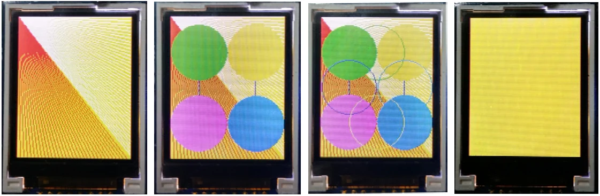

Activity 1-4 : Simple graphic displaying
The glcd() function is main function for GLCD screen of ATX2 board operation. Except showing text messages, this function also support more commands for drawing lines and simple geometry shape. Includes :
glcdRect(int x1,int y1,int width,int height,uint color) isfunction to draw a rectangle shape.
glcdFillRect(int x1,int y1,int width,int height,uint color)is function to create a solid rectangle shape.
glcdLine(int x1, int y1, int x2, int y2,uint color) is functionto draw the line.
glcdCircle(int x, int y, int radius,uint color) is function to draw a circle.
glcdFillCircle(int x, int y, int radius,uint color) is functionto create a solid circle shape.
glcdClear(uint color) is clear display function.
The testing program is shown in the Listing A1-4. Create the sketch, compile and upload to the ATX2 board. The result is as follows :

If the color of the display is not correct, may be due to the version of the GLCD monitor. This GLCD monitor has 2 versions that different data setting. The solution is remove // symbol from the glcdSetColorWordRGB (); function in setup(); . It will be change the color data setting.
#include <ATX2.h> // Include IPST-SE library
int i,j;
void setup()
{
//glcdSetColorWordRGB(); // Enable this function if displaying color
// incorrect
}
void loop()
{
glcdClear; // Clear screen and set background to black
sleep(300);
for (i=0;i<160;i+=4)
{
glcdLine(0,0,128,i,GLCD_WHITE); // Draw the white line from 0,0
// coordinate to target
}
for (i=0;i<128;i+=4)
{
glcdLine(0,0,i,160,GLCD_RED); // Draw the red line from 0,0
// coordinate to target
}
sleep(2000);
glcdRect(32,40,64,80,GLCD_BLUE); // Draw the blue rectangle layout
sleep(300);
glcdFillCircle(32,40,31,GLCD_GREEN); // Create the solid green circle
glcdFillCircle(96,40,31,GLCD_YELLOW); // Create the solid yellow circle
glcdFillCircle(32,120,31,GLCD_MAGENTA); // Create the solid margenta circle
glcdFillCircle(96,120,31,GLCD_SKY); // Create the solid light blue circle
sleep(1000);
glcdCircle(64,40,31,GLCD_GREEN); // Draw the green circumference
glcdCircle(32,80,31,GLCD_BLUE); // Draw the blue circumference
glcdCircle(64,120,31,GLCD_YELLOW); // Draw the yellow circumference
glcdCircle(96,80,31,GLCD_SKY); // Draw the light blue circumference
sleep(1000);
glcdFillRect(0,0,128,160,GLCD_YELLOW); // Create the solid yellow rectangle
sleep(1000);
}Original manual, pages 104–105